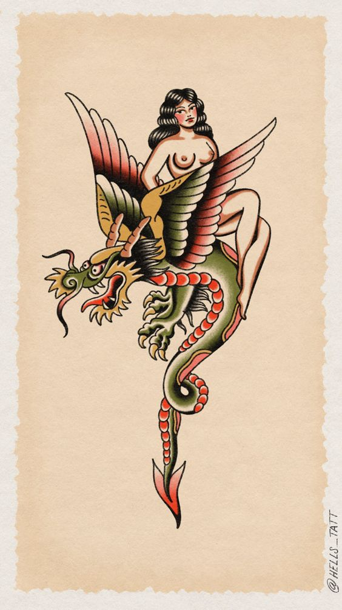

American Traditonal

This is the most classic tattoo style. Known often for sleeves and patchwork this tattoo style follows tradition. The main color pallete is blacks, greens, reds and brown and traditionalys the tattoos are of girls, animals (snakes, birds, crocodiles) or knives.